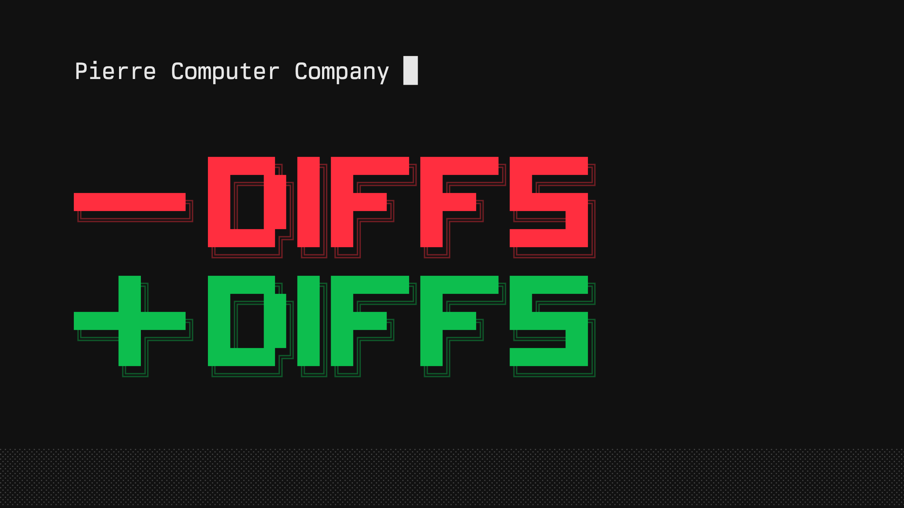
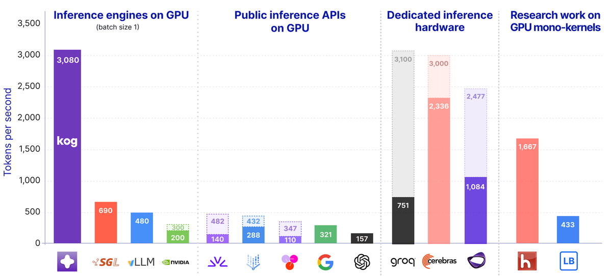

THE FRONT PAGE
EDITOR'S NOTE: As we bypass the operating system to wring raw speed from commodity silicon, we must ask if we are building a faster highway or merely accelerating our retreat from legible engineering. #Hardware-level optimizations and the systemic automation of trading and code synthesis.
BREAKING VECTORS
MODEL ARCHITECTURES

The loss of legibility in automated code synthesis
As generative models accelerate the volume of code modifications, the interface for reviewing differences remains stuck in a text-based paradigm. The primary risk shifted from writing the code to verifying a machine's logic, where subtle bugs hide in plain sight among vast, unreadable diffs.
NEURAL HORIZONS
LAB OUTPUTS
INFERENCE CORNER

Monokernel bypass achieves 3,000 tokens per second on commodity hardware
By stripping away abstraction layers to squeeze extreme inference speeds from standard GPUs, this technique moves the bottleneck entirely to network saturation. It is a striking reminder of what software craft can extract from silicon when we stop treating compute as an infinite, magical resource.